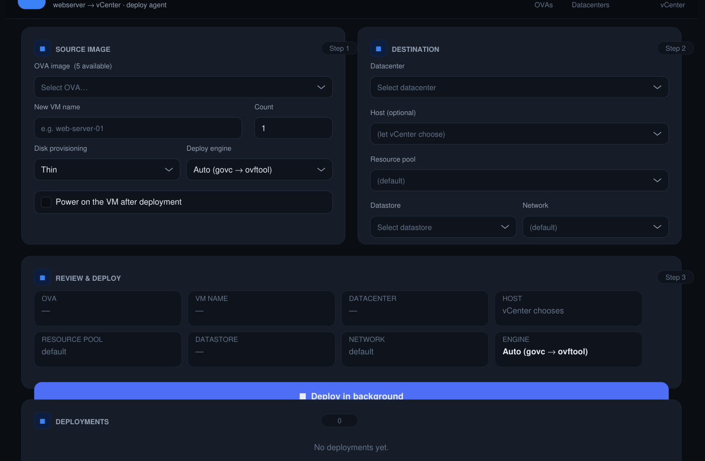
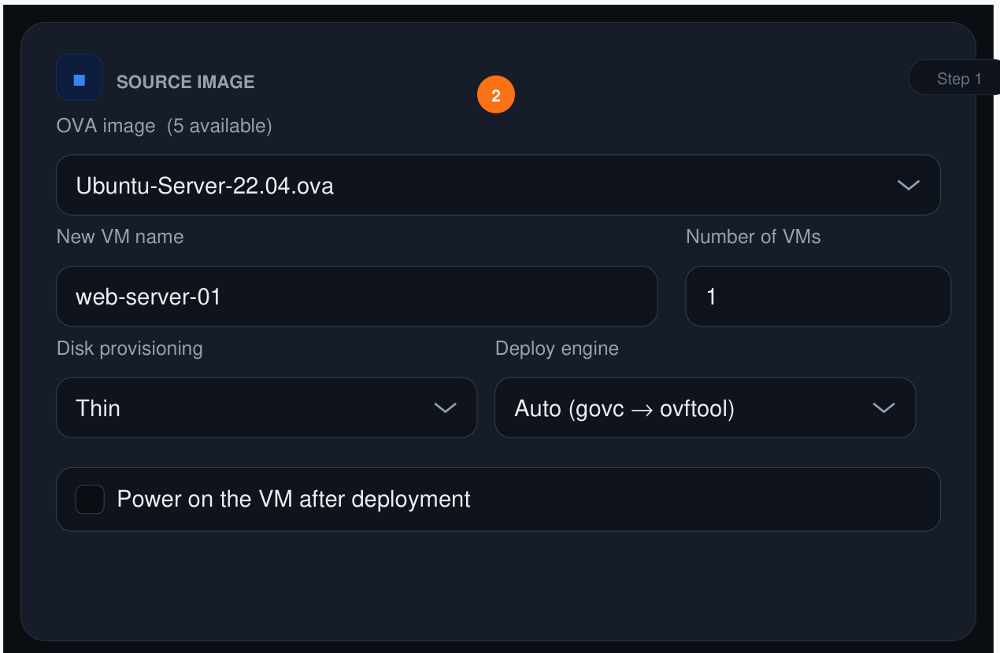
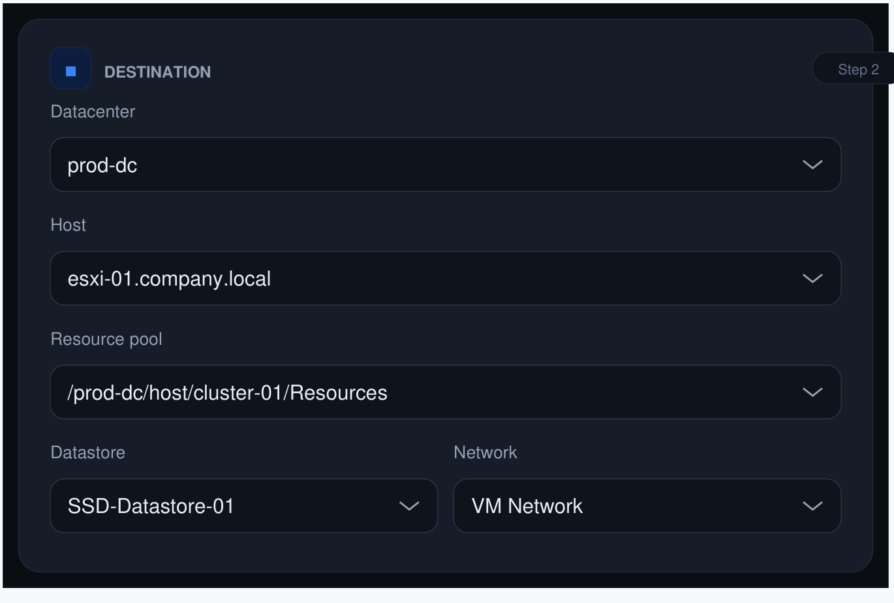
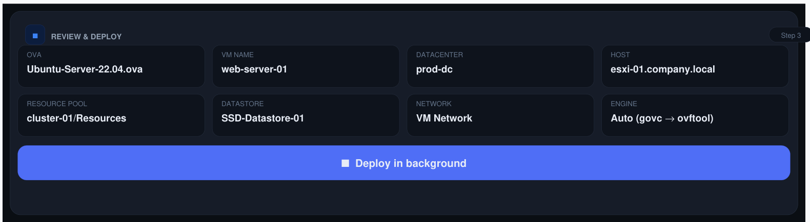
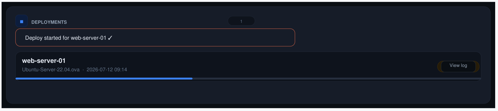
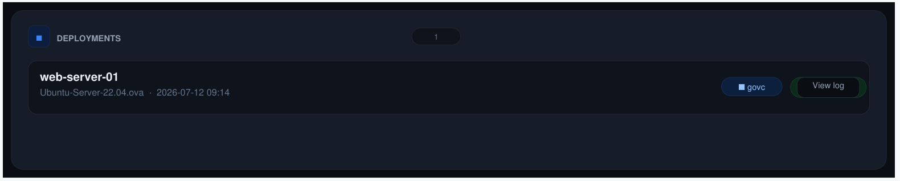

Deploying an OVA into vCenter by hand — picking the datacenter, host, resource pool, datastore, network, then babysitting the import — gets old fast when you're doing it repeatedly. I built OVA Deployer to make it one click (or one MCP tool call): pick an OVA served over HTTP, pick a destination, and it streams the image straight into vCenter in the background.
Two front doors, one core
There's a small Flask web UI (webapp.py + a single-page dashboard) for a human
to click through, and an MCP server (server.py) for AI/automation clients over
stdio. Both call the exact same underlying functions — nothing is duplicated, and the web UI
works perfectly well with no AI client involved at all.
The OVA itself never touches local disk — it flows web server → deploy tool → vCenter as a stream. No staging, no cleanup.
Fire-and-forget deploys
A deploy call returns a deploy_id immediately; the actual import runs as a
detached background process (setsid / start_new_session=True),
so it survives the HTTP request finishing, the browser closing, or the MCP/SSH session
ending. State is derived entirely from files on disk —
deployments/<id>.json (metadata), .log (combined output), and
.rc (exit code, written when the process finishes) — so status is correct even
across a restart of the web app.
.rc file exists — no
in-memory state to lose.
Two deploy engines, auto-fallback between them
This is the part that actually mattered in practice. govc (a lightweight Go
vSphere CLI) is fast and needs no separate install, but it's a strict, literal OVF
translator. ovftool (VMware's official tool) is slower to set up but far more
lenient — it sanitizes and converts hardware definitions govc won't touch.
Real example from building this: a desktop-exported Ubuntu24.04.ova (from
Workstation/Fusion, not ESXi) made govc reject it with
Invalid configuration for device 6 — a 3D video card with
enableMPTSupport. Stripping that device just moved the error to device 5, then
device 0. govc simply couldn't translate that VM's hardware for vCenter no matter what got
removed. ovftool (with --allowExtraConfig) imported it cleanly on
the first try.
So deploy_ova(engine="auto") (the default) tries govc first — fast path for
well-formed, ESXi-exported OVAs — and falls back to ovftool automatically when govc fails.
The operator never has to know or care which kind of OVA they're holding.
| govc | ovftool | |
|---|---|---|
| What it is | Lightweight Go vSphere CLI (govmomi) | VMware's official OVF Tool |
| OVF handling | Strict, literal translation | Smart, lenient — sanitizes/converts |
| Install | Single binary, no account needed | Requires a Broadcom account download |
| Best for | Well-formed (ESXi-exported) OVAs — fast | Desktop-exported (Workstation/Fusion) OVAs |
Credentials handling
vCenter credentials live only in a gitignored, mode-600 credentials.env, loaded
into the process environment at launch and read by govc directly. The one
caveat: ovftool takes the password inside its vi://user:pass@host
target URL, so it's briefly visible in ps output during a deploy — that's
documented rather than hidden, and acceptable on a trusted network. Anything written to
deploy metadata or logs has the command sanitized (vi://user:***@host) so the
password never lands on disk.
Tools exposed (same set, web and MCP)
list_ovas()— list.ovafiles available on the web servervcenter_about()— verify vCenter connectivitylist_vcenter_targets()— datacenters, clusters/hosts, datastores, networksdeployment_spec(ova)— inspect an OVA's networks/properties before deployingdeploy_ova(ova, vm_name, ...)— start a background deploymentdeployment_status(deploy_id)— running / succeeded / failed + log taildeployment_log(deploy_id)— full deploy loglist_deployments()— everything currently tracked
Quick start
bash
cd ova-deploy-mcp
cp credentials.env.example credentials.env # fill in vCenter creds
set -a; . ./credentials.env; set +a
./venv/bin/python smoke_test.py # webserver + vCenter sanity checks
# web UI
./venv/bin/python webapp.py # http://<host>:8080/
# or MCP server (stdio)
./venv/bin/python server.py
Persistence on the deploy host is handled with a start-webapp.sh script wired
into the user's crontab: @reboot to start on boot, plus a
*/2 * * * * watchdog line to relaunch it if the process ever dies.
What I'd tighten next
The web UI's total lack of auth is fine on a locked-down network segment, but the obvious next step is fronting it with basic auth or binding it to localhost-only and reaching it over an SSH tunnel — cheap changes that remove the "keep it on a trusted network" caveat entirely.
Deployment Runbook — Using the Web UI
The write-up above covers how the tool is built; this section is the operator-facing runbook — what it actually looks like to deploy a VM through the web UI, end to end.

Before you begin
- A browser reachable to the agent VM on port 8080.
- The name of the OVA to deploy (ask your administrator if unsure).
- A unique VM name for the new machine (letters, numbers, hyphens, underscores only).
- Optionally: preferred datacenter, host, datastore, and network — leave blank to use vCenter defaults.
Step 1–2 — Choose the OVA and name the VM
The Source Image card is where every deployment starts. Open the OVA image dropdown and pick the image matching the OS or appliance you need — the count shown is how many are available. Enter a VM name (letters, numbers, hyphens, underscores only) and leave Count at 1 for a single VM.
Leave the advanced options at their defaults unless you have a reason not to: Disk Thin, Engine Auto, Power on off. Switch Engine to "ovftool only" specifically for desktop-exported OVAs.
<name>-1
… <name>-N sequentially. A failure on one copy doesn't stop the rest.

Step 3 — Set the destination
The Destination card controls where in vCenter the VM lands. Every field here is optional — blank means "use vCenter defaults":
- Datacenter — selecting one filters all the remaining dropdowns.
- Host — the ESXi host or cluster; leave blank to let vCenter balance automatically.
- Resource pool — leave blank for the default.
- Datastore — pick one with sufficient free space.
- Network — the port group / VM network for the first NIC.

Step 4 — Review and deploy
The Review & Deploy card mirrors every setting you picked so you can verify before committing — greyed-out values (like "vCenter chooses") mean that field was left blank. Click Deploy in background: the server responds immediately with a deploy ID while the actual import runs as a detached background process. A confirmation toast appears, and a new row shows up in the Deployments panel below.

Step 5 — Monitor the deployment
The Deployments panel refreshes automatically every 4 seconds. Each row shows the VM name, OVA, start time, engine used, and current status:
- queued — process started but the engine hasn't written output yet; normal for the first few seconds.
- running — OVA is being streamed and imported; large images take 5–30 min. Click "View log" to watch bytes move.
- succeeded — the VM exists in vCenter; power it on and configure as needed.
- failed — open the full log for the error message (see Troubleshooting below).


Click "View log" on any row to open the log drawer — it shows raw output from govc or ovftool, including upload progress and any error messages.
Troubleshooting
| Symptom | Likely cause | Resolution |
|---|---|---|
| OVA list is empty | Agent cannot reach the OVA web server. | Check network connectivity from the agent VM. Contact your administrator. |
| Destination dropdowns empty or show errors | Agent cannot reach vCenter (credentials or network). | Contact administrator to verify GOVC_URL / credentials are set correctly. |
| "Invalid configuration for device N" | govc rejected a desktop-exported OVA (Workstation/Fusion). | Set Engine to "ovftool only" and redeploy. In Auto mode this fallback happens automatically if ovftool is installed. |
| "x509: certificate signed by unknown authority" | vCenter uses a self-signed certificate. | Administrator must set GOVC_INSECURE=true in the agent config. |
| Network not found / NIC error | Network name mismatch between UI and vCenter. | Verify the Network dropdown shows the exact name as it appears in vCenter. |
| Status stuck on "running" for > 30 min | Large OVA or slow network. Also possible: process died silently. | Click "View log" — if bytes are still moving, it's working. If the log hasn't changed in 10+ min, contact administrator to check the agent process. |
| Browser closed — where is my deploy? | Deploy continues in background. | Scroll to the Deployments panel when you return — all deploys persist there. |
| "ovftool not found" with engine=ovftool | ovftool binary is not installed on the agent VM. | Contact administrator to install ovftool to bin/ovftool. |
Quick Reference
Deployment checklist
- Open
http://<agent-vm>:8080/in a browser. - Source Image card: select OVA, enter VM name, set count / disk / engine.
- Destination card: choose datacenter, host, datastore, network (all optional).
- Review card: verify the summary, then click Deploy in background.
- Deployments panel: wait for status to change from running → succeeded.
- Log in to vCenter and confirm the VM appears in the expected folder.
- Power on the VM if "Power on after deploy" wasn't checked.
REST API (command-line access)
The same data visible in the UI is also available as JSON for scripting:
bash
BASE=http://<agent-vm>:8080
# List available OVAs
curl -s $BASE/api/ovas | python3 -m json.tool
# List all deployments
curl -s $BASE/api/deployments | python3 -m json.tool
# Status of one deployment
curl -s $BASE/api/status/<deploy-id> | python3 -m json.tool
# Full log
curl -s $BASE/api/log/<deploy-id> | python3 -m json.tool
Deploy engines at a glance
| Engine | Best for | Notes |
|---|---|---|
| govc | Well-formed OVAs exported from ESXi. | Fast, ships as a single binary. Default first choice. |
| ovftool | Desktop-exported OVAs (Workstation / Fusion). | Handles virtual hardware govc cannot translate. |
| auto | Any OVA — recommended setting. | Tries govc first; falls back to ovftool on failure. |
Full source, architecture diagrams, and the operations runbook are on GitHub. Questions? vsiranjeevi93@gmail.com.